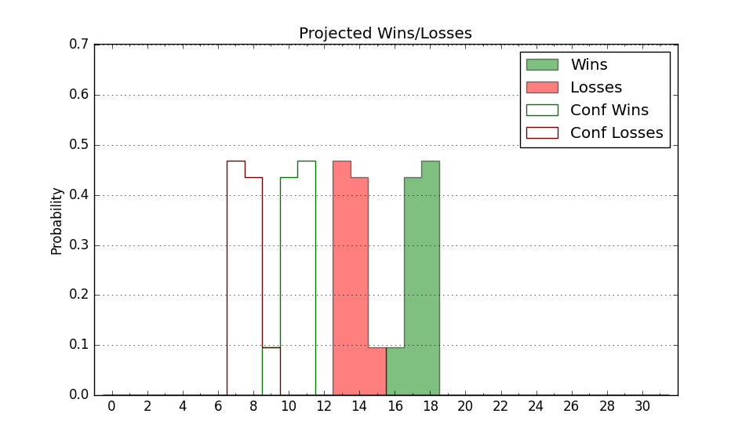

| Home | Game Probabilities | Conferences | Preseason Predictions | Odds Charts | NCAA Tournament |
| City: | West Long Branch, New Jersey | |
| Conference: | Colonial (7th)
| |
| Record: | 9-7 (Conf) 16-13 (Overall) | |
| Ratings: | Comp.: -2.4 (187th) Net: -2.4 (187th) Off: 104.7 (185th) Def: 107.1 (208th) SoR: 0.0 (143rd) |
| Remaining | ||||||
|---|---|---|---|---|---|---|
| Date | Opponent | Win Prob | Pred. | |||
| 2/29 | @ Hampton (343) | 75.7% | W 80-72 | |||
| 3/2 | @ Elon (308) | 61.8% | W 77-74 | |||
| Previous | Game Score | |||||
| Date | Opponent | Win Prob | Result | Off | Def | Net |
| 11/6 | @George Mason (90) | 14.2% | L 61-72 | -14.0 | 10.7 | -3.3 |
| 11/10 | @West Virginia (132) | 23.2% | W 73-65 | 13.3 | 17.3 | 30.5 |
| 11/18 | Princeton (64) | 26.8% | L 57-82 | -18.0 | -0.2 | -18.2 |
| 11/21 | Lehigh (266) | 75.8% | W 88-79 | 9.9 | -9.5 | 0.4 |
| 11/24 | (N) Belmont (128) | 33.7% | W 93-84 | 23.2 | -4.3 | 18.9 |
| 11/25 | (N) Lafayette (307) | 74.9% | W 63-53 | -16.6 | 22.6 | 6.0 |
| 11/26 | @Penn (190) | 35.8% | L 61-76 | -9.6 | -9.0 | -18.6 |
| 11/29 | @Cornell (115) | 18.2% | L 87-91 | 18.0 | -3.1 | 14.9 |
| 12/9 | Northern Illinois (302) | 83.3% | W 74-71 | -13.4 | -5.9 | -19.3 |
| 12/12 | @Seton Hall (51) | 8.5% | L 61-70 | -1.0 | 11.1 | 10.1 |
| 12/16 | Rider (263) | 75.7% | W 77-71 | 3.7 | -8.0 | -4.2 |
| 12/21 | Manhattan (339) | 90.6% | W 77-71 | -8.1 | -6.4 | -14.6 |
| 12/31 | @Oklahoma (38) | 6.5% | L 56-72 | -1.4 | 8.3 | 7.0 |
| 1/4 | Towson (152) | 56.8% | W 51-43 | -28.7 | 37.4 | 8.7 |
| 1/8 | Northeastern (238) | 72.5% | W 81-62 | 9.5 | 15.7 | 25.2 |
| 1/11 | @UNC Wilmington (105) | 16.9% | L 56-69 | -19.4 | 10.0 | -9.5 |
| 1/13 | @College of Charleston (117) | 18.4% | L 83-94 | 8.2 | -7.6 | 0.6 |
| 1/18 | @Drexel (129) | 21.8% | L 74-78 | 25.0 | -21.9 | 3.0 |
| 1/20 | Hampton (343) | 91.4% | W 85-77 | 3.2 | -16.7 | -13.5 |
| 1/25 | @Stony Brook (226) | 42.1% | L 65-72 | -8.5 | 1.3 | -7.2 |
| 1/27 | Hofstra (127) | 48.1% | W 81-78 | 13.5 | -13.3 | 0.2 |
| 2/1 | Drexel (129) | 48.7% | W 67-62 | -4.8 | 13.3 | 8.5 |
| 2/3 | @Delaware (148) | 26.9% | L 80-84 | 12.0 | -8.8 | 3.2 |
| 2/8 | William & Mary (330) | 88.6% | W 68-64 | -10.8 | -3.5 | -14.3 |
| 2/10 | @Northeastern (238) | 43.7% | L 65-77 | -8.3 | -8.1 | -16.4 |
| 2/15 | Campbell (293) | 81.9% | W 88-87 | -0.9 | -17.2 | -18.0 |
| 2/17 | Stony Brook (226) | 71.3% | W 84-61 | 19.6 | 11.3 | 30.9 |
| 2/22 | @Towson (152) | 27.8% | L 61-80 | -0.6 | -18.0 | -18.7 |
| 2/24 | North Carolina A&T (338) | 90.5% | W 83-67 | 1.3 | -1.5 | -0.2 |
| Stats & Trends | |||||
|---|---|---|---|---|---|
| Current | Day | Week | Month | Season | |
| Composite | -2.4 | +0.1 | -0.5 | -0.8 | +7.7 |
| Comp Rank | 187 | -- | -5 | -7 | +85 |
| Net Efficiency | -2.4 | +0.1 | -0.5 | -1.2 | -- |
| Net Rank | 187 | -- | -4 | -12 | -- |
| Off Efficiency | 104.7 | +0.0 | +0.4 | +1.2 | -- |
| Off Rank | 185 | +1 | +4 | +4 | -- |
| Def Efficiency | 107.1 | +0.0 | -0.8 | -2.5 | -- |
| Def Rank | 208 | -1 | -11 | -31 | -- |
| SoS Rank | 180 | +1 | -2 | -35 | -- |
| Exp. Wins | 17.4 | -0.0 | -0.2 | +0.6 | +5.8 |
| Exp. Conf Wins | 10.4 | -0.0 | -0.2 | +0.6 | +3.0 |
| Conf Champ Prob | 0.0 | -- | -0.1 | -0.5 | -1.0 |

| Advanced Stats | ||
|---|---|---|
| Stat | Value | Rank |
| Off Eff FG % | 0.490 | 230 |
| Off Ast Ratio | 0.137 | 197 |
| Off ORB% | 0.292 | 131 |
| Off TO Rate | 0.138 | 115 |
| Off FT Ratio | 0.337 | 167 |
| Def Eff FG % | 0.502 | 157 |
| Def Ast Ratio | 0.151 | 251 |
| Def ORB% | 0.321 | 319 |
| Def TO Rate | 0.151 | 138 |
| Def FT Ratio | 0.345 | 225 |